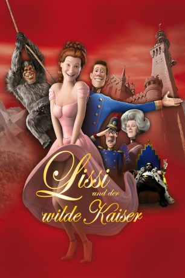

#2694 Lissi und der wilde Kaiser
 
 IMDB-Wertung: 5.1 / 10
IMDB-Wertung: 5.1 / 10  Metascore: 0
Metascore: 0 
Die österreichische Kaiserin Lissi und ihr geliebter Franz werden an ihrem Turteltag während der Striptease-Vorführung auseinander gerissen. Der Yeti hat sich aus dem weiten Himalaya auf den Weg ins Alpenland gemacht und entführt nun das schönste Mädchen der Welt, um sie dem Teufel für sein Leben zu verkaufen. Nicht nur Franz versucht seine Holde zurück zu bekommen. Auch ein Kammer- bzw. Kopfgeldjäger-Duo setzt sich auf die Spur des Yeti, der mit Hilfe Lissis Zuflucht beim bayerischen König Ludwig sucht.
Jahr: 2007
Dauer: 84 Minuten
FSK: 6
Land: Deutschland Studio: Constantin FilmTonspuren:
Untertitel:
Auflösung: 1080p (1920x816) Größe: 8140 MB
Genre: Komödie, Abenteuer, Animation/Trick
Regisseur:  Michael Herbig
Michael Herbig
Drehbuch: Michael Herbig, Alfons Biedermann
Soundtrack: Ralf Wengenmayr
Darsteller:
 Waldemar Kobus als Yeti
Waldemar Kobus als Yeti Rick Kavanian als Feldmarschall / König Bussi von Bayern / Schwaiger
Rick Kavanian als Feldmarschall / König Bussi von Bayern / Schwaiger Michael Herbig als Lissi / Ignaz / Erwin Falthauser
Michael Herbig als Lissi / Ignaz / Erwin Falthauser- Lotte Ledl als Kaiserin Mutter Sybille
 Christian Tramitz als Franz / Franz's Father
Christian Tramitz als Franz / Franz's Father- Badesalz als Teufel
- Monika John als Navigationssystem
- Howard Cooper als
- Andreas Borcherding als
- Niko Macoulis als
- Claus Peter Damitz als
- Gerhard Jilka als
- Claus Brockmeyer als
- Mike Carl als
- Dagmar Dempe als
- Melanie Manstein als
Datei: X:\Kinder Filme (G-M)\Lissi und der wilde Kaiser (2007, FSK6, 1920x816).mkv seit 03.12.2015
Festplatte: Kinder-Filme+Trick
 Es gibt insgesamt 84 Filme in der Gruppe 'Kinder Filme (G-M)'
Es gibt insgesamt 84 Filme in der Gruppe 'Kinder Filme (G-M)'